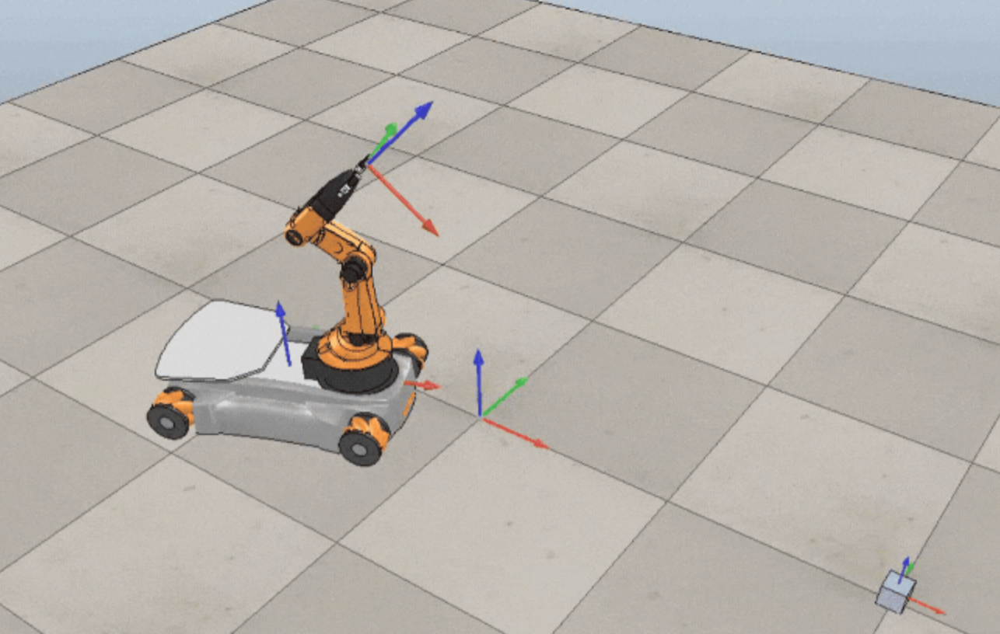
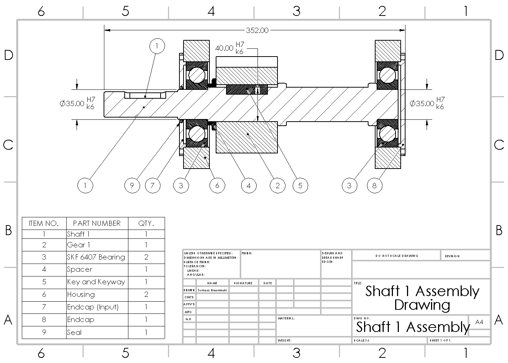

A selection of robotics, controls, mechanical design, manufacturing, computer vision, and simulation projects spanning coursework, research, and engineering teams.

Fiber Pump Winding Jig (In Progress)
Designing a precision winding fixture for fabricating fiber-based robotic actuators, with an emphasis on repeatable geometry, manufacturability, and rapid iteration.
SolidWorks
Machining
Robotics
Prototyping
Learn more

Robot Design Studio - Robot Finger
Designed and built a tendon-driven robotic finger with coupled joints, custom transmission geometry, and integrated actuation for dexterous manipulation.
SolidWorks
Machining
Robotics
Mechanism Design
Learn more

Sawyer Robot ROS1 to ROS2 Port
Ported Sawyer's Intera SDK and motion interfaces to ROS 2, developed a ROS 1/ROS 2 bridge for topics, services, and actions, and configured MoveIt 2.
ROS 2
ROS 1
Python
C++
Learn more

Quadrotor Control System Design
Modeled and designed feedback controllers for a quadrotor, using dynamic-system analysis and control techniques to regulate vehicle motion and stability.
MATLAB
Controls
Dynamics
Simulation
Learn more

Artificial Life Portfolio
Explored emergent behavior through L-systems, cellular automata, boids, and an interactive evolution simulator built from simple local rules.
Simulation
Emergent Behavior
Algorithms
Interactive Graphics
Learn more

Injection-Molded Turtle: From CAD to Production
Took a plastic turtle from CAD through mold design, machining, and injection molding, connecting part design decisions directly to the manufacturing process.
SolidWorks
CAM
Machining
Injection Molding
Learn more

Offset Measurement Using Computer Vision
Built an OpenCV measurement system that detects object geometry and internal features, calibrates physical dimensions, and reports rotationally invariant centroid offsets.
Python
OpenCV
Computer Vision
Image Processing
Learn more

Obstacle Avoidance using Q-Learning
Implemented Q-learning for robot navigation and obstacle avoidance, training an agent to learn efficient paths through a discretized environment.
Python
Q-Learning
Robotics
Path Planning
Learn more

Online A\* and Potential Fields (From Scratch)
Implemented online A* search and artificial potential fields from scratch to plan paths and reactively guide a robot around obstacles.
Python
A*
Potential Fields
Path Planning
Learn more

Particle Filter
Implemented a particle filter for planar robot localization, combining noisy motion prediction, probabilistic measurements, weighting, and resampling.
Python
State Estimation
Particle Filters
Robotics
Learn more

Differential Drive Robot
Developed a differential-drive mobile robot project focused on kinematics, motion control, sensing, and autonomous navigation.
Robotics
Controls
Kinematics
Embedded Systems
Learn more
DC Motor Controller (From Scratch)
Designed and implemented a DC motor control system from first principles, including system modeling, feedback control, and experimental response analysis.
Controls
MATLAB
System Identification
Electronics
Learn more

Hexapod Robot Pose Correction using KNN Algorithm
Used a K-nearest-neighbors model to estimate and correct hexapod heading error from sensor data, improving pose accuracy during locomotion.
Python
KNN
Robotics
Machine Learning
Learn more

Front Differential Housing for Baja SAE Vehicle
Designed a front differential housing for a Baja SAE drivetrain with attention to packaging, structural loading, manufacturability, and serviceability.
SolidWorks
FEA
Machining
Baja SAE
Learn more

KUKA Mobile Manipulator
Planned and controlled a KUKA youBot mobile manipulator through a complete pick-and-place task using task-space trajectory generation and feedback control.
Python
Robotic Manipulation
Controls
CoppeliaSim
Learn more

Two-Stage Reducer Gearbox Design using Python
Designed a 60 kW two-stage gearbox and automated gear, shaft, bearing, fatigue, and factor-of-safety calculations in Python.
Python
Machine Design
Gear Design
SolidWorks
Learn more

Impact Dynamics Simulation
Modeled an impact-dynamics system and simulated its transient response to study contact forces, motion, and energy transfer during collision.
MATLAB
Dynamics
Simulation
Numerical Methods
Learn more

Static Structure Design
Designed and analyzed a load-bearing structure from initial calculations through fabrication and physical testing, balancing strength, stiffness, and material use.
SolidWorks
Structures
FEA
Fabrication
Learn more

Front Powertrain Guarding for Baja SAE Vehicle
Redesigned the Baja SAE front powertrain guard for safer drivetrain containment, easier maintenance, and faster installation using lightweight aluminum construction.
SolidWorks
Sheet Metal
Manufacturing
Baja SAE
Learn more

Vertiglow System
Developed a vision-based system using fiducial detection and image processing to identify and track features on a plant for automated measurement and experimentation.
Python
Computer Vision
Fiducials
Robotics
Learn more